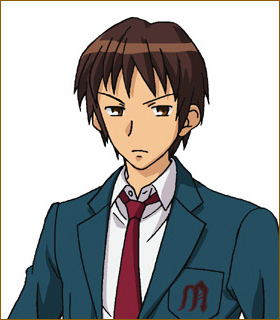

团队宗旨是：
·找出外星人，超能力者，未来人并和他们一起玩！
这样张扬的团名与怪奇的宗旨怎么可能过得了学生会的检查呢...说到底，外星人，超能力者和未来人中任何一个存在都很奇怪吧...还是改成“学生会拥护同好会”，为学生提供校园生活咨询吧
我们SOS团正扩大招募这世上所有不可思议的事。欢迎过去曾经历不可思议事件的人，或是现在正面临不可思议、谜样现象的人，以及有预感不久的将来一定会经历奇幻事件的人踊跃与我们咨询。我们会尽力替你解决问题。不过，普通的不可思议事件恕不受理，一定要让我们觉得相当惊人的不可思议事件才行，敬请注意。